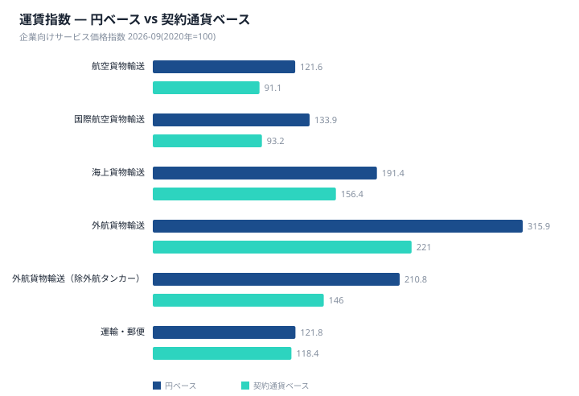
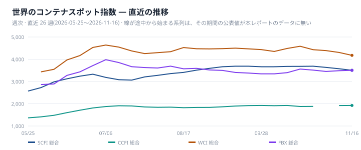
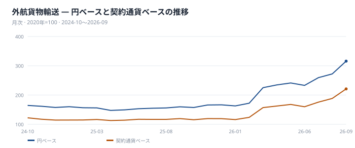
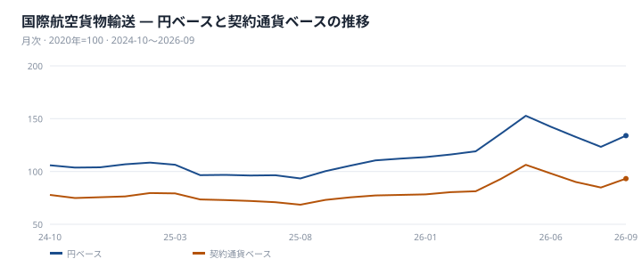
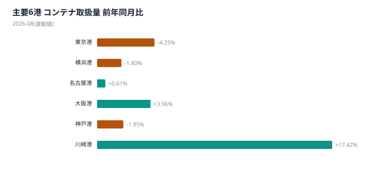
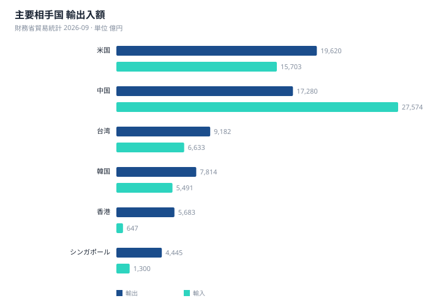

本号が扱う基準月は軸ごとに異なる。海運・航空のスポット指数は2026年11月16日時点、企業向けサービス価格指数は2026年9月分、港湾統計は2026年8月分の速報値、貿易統計は2026年9月分(速報)である。これらを一本の時系列として読むのではなく、それぞれ別の断面として捉える必要がある。
世界のコンテナスポット運賃は方向が割れている。SCFI総合は3503.78(前週比▲1.92%)、WCI総合は4176(同▲3.0%)と下落した一方、CCFI総合は1923.21(同+0.21%)、FBX総合は3504.25(同+0.55%)と上昇し、主要4指数は上昇2指数・下落2指数に分かれた。中国と欧州を結ぶユーラシア鉄道のERAI総合指数も3891(前月比▲0.99%)で、西航4082(同▲0.05%)・東航2602(同+0.04%)とわずかに方向が分かれている。世界のスポット市場全体として、明確な一方向の局面にはない。
日本側では、国際航空貨物輸送が円ベース133.9・契約通貨ベース93.2で、前年同月比は円ベースが+33.5%、契約通貨ベースが+27.5%とともに前年を上回った。港湾では主要6港の外国貿易コンテナ取扱量が合計113万6881TEU(前年同月比▲1.2%)で、輸出54万9573TEUに対し輸入58万7308TEUと輸入が上回る構成だった。貿易統計では輸出額10兆9539億円(+16.5%)、輸入額11兆5103億円(+18.5%)で、5565億円の輸出入差(赤字)が生じている。世界のスポットの方向が割れる中でも、日本側の各指標は前年同月を上回る水準にある。
今月の芯は、国際系列と国内系列のあいだで伸びの大きさが大きく分かれている点である。外航貨物輸送は円ベース315.9・契約通貨ベース221で、前年同月比は円ベースが+97.7%、契約通貨ベースが+84.8%といずれも大きな伸びを示した。これに対し、本号で確認できる国内系列のうち国内航空貨物輸送は前年同月比▲2.6%で、前年を下回っている。両者の差は契約通貨の違いによるものであり、外貨建て契約の外航貨物輸送は契約通貨ベースの伸びに加えて為替換算の影響が円ベースに反映されるのに対し、円建て契約の国内航空貨物輸送は為替換算の影響を受けない。国際航空貨物輸送も円ベース133.9・契約通貨ベース93.2とともに前年を上回っており、国際の系列には契約通貨ベースの伸びに為替の影響が重なって表れている。
海運のスポット指数は週次で直近まで公表されるのに対し、日本の企業向けサービス価格指数は月次で約2か月遅れで公表される。直近のスポット運賃が上昇2指数・下落2指数と方向の割れた状態にあることは、まだ公表されていない日本の外航運賃指数の次回公表がどちらを向くかを考える材料になる。ただし転嫁の幅と時期は契約条件によって異なり、データからは特定できない。来月に向けては、海運4指数の方向性と、次回公表される日本の企業向けサービス価格指数の外航貨物輸送が確認すべき指標となる。

2026年11月16日時点のスポット運賃は、SCFI総合が3503.78(前週比▲1.92%)、CCFI総合が1923.21(同+0.21%)、WCI総合が4176(同▲3.0%)、FBX総合が3504.25(同+0.55%)だった。主要4指数は上昇2指数・下落2指数に分かれ、方向は割れている。航路別では2026年11月2日時点で、上海発欧州向けSCFIが2325、上海発米西岸向けが7381、上海発米東岸向けが9857となっている。世界のスポット指数は週次で直近まで公表される一方、日本の統計は月次であり、基準日が揃わない点には注意を要する。両者は同一時点の動きとしてではなく、同時期に観測された別々の事実として扱う。
2026年9月分(2020年=100)の海上貨物輸送は円ベース191.4、契約通貨ベース156.4だった。前年同月比は円ベースで+46.2%、契約通貨ベースで+34.7%。為替換算による上乗せ率は+8.5%であり、指数の比で見ると円ベース指数は契約通貨ベース指数を22.4%上回っている。内訳である外航貨物輸送は円ベース315.9、契約通貨ベース221.0と海上貨物輸送全体より高い水準で、前年同月比は円ベースで+97.7%、契約通貨ベースで+84.8%。為替換算による上乗せ率は+7.0%、指数の比では円ベース指数が契約通貨ベース指数を42.9%上回る。さらにその内訳である外航貨物輸送(除外航タンカー)は円ベース210.8、契約通貨ベース146.0で、前年同月比は円ベースで+30.6%、契約通貨ベースで+23.5%、為替換算による上乗せ率は+5.7%である。一方、海上貨物輸送のもう一つの内訳である内航貨物輸送は円ベース139.6、前年同月比+8.1%にとどまり、外航の伸びに比べると小さい。契約通貨ベースの系列は公表されていない。世界のスポット指数は2026年11月16日時点まで週次で公表されているのに対し、日本の外航運賃指数は2026年9月分までの公表である。直近のスポットの動きは、まだ公表されていない日本の指数が今後どちらを向くかを考える材料になる。ただし転嫁の幅と時期は契約条件によって異なり、本データのみでは特定できない。
日本海事センターの航路別コンテナ荷動き(2026年9月分、北米往航)によると、日本発の米国向けは5万5152TEU、前年同月比+24.5%。18ヶ国・地域合計は205万3213TEU(+13.2%)で、日本の構成比は2.7%にとどまる。同時期の中国発は106万7336TEU(+22.4%)、韓国発は10万7013TEU(+15.7%)、台湾発は5万3125TEU(+8.9%)、ベトナム発は32万1746TEU(+2.5%)で、ファクトシートにある中国・韓国・台湾・ベトナムとの比較では日本の伸び率が最も高い。欧州往航(2026年8月分)はアジア合計181万7932TEU、前年同月比▲1.7%。地域別では中華地域が143万4248TEU(▲2.8%、構成比78.9%)で最大、東南アジアは25万1551TEU(+9.8%)と増加した一方、北東アジアは13万2131TEU(▲9.2%)と落ち込んだ。欧州航路に日本単独の数字は公表されておらず、北東アジアに含まれる。
供給面では、Drewryが集計する主要East-West航路(アジア〜欧州・太平洋・大西洋。日本発着に限った数字ではない)の欠航動向で、直近公表(2026年11月13日)の欠航は52便、計画716便に対し欠航率7.3%だった。公表された直近6回を見ると、2026年9月18日の10.7%から10月9日に5.0%まで低下した後、11月13日には7.3%まで戻している。同時期の世界のコンテナスポット運賃はSCFI・WCIが下落、CCFI・FBXが上昇しており、方向は割れている。内航貨物輸送は円ベース139.6(前年同月比+8.1%)、バルク市況のBDIは2026年11月2日時点で2695、バンカー価格はVLSFOが954、HSFOが818だった。


国際航空貨物輸送は円ベース133.9、契約通貨ベース93.2。前年同月比は円ベースが+33.5%、契約通貨ベースが+27.5%で、ともに前年を上回る。ただし契約通貨ベースの93.2は基準年(2020年=100)を下回る水準にとどまっており、運賃そのものは基準年比でなお低いことになる。為替換算による上乗せ率は前年同月比ベースで+4.7%、指数の比(基準年からの累積)でみると+43.7%に達しており、円ベースの伸びの大きさには為替換算の影響が相応に反映されている。親系列にあたる航空貨物輸送は円ベース121.6、契約通貨ベース91.1で、こちらも契約通貨ベースは基準年を下回る。世界のコンテナスポット運賃は主要4系列が上昇2・下落2に分かれているのに対し、国際航空は円ベース・契約通貨ベースとも前年同月を上回っている。
国内航空貨物輸送は円ベース84.5、前年同月比▲2.6%で、国際線とは逆に前年を下回った。契約通貨ベースの系列は示されていない。国際線が為替換算の上乗せを伴いながら円ベース・契約通貨ベースとも前年を上回っているのに対し、国内線は円ベースの水準自体が84.5と低く、前年同月比もマイナスである点で方向が分かれている。親系列である航空貨物輸送(円ベース121.6、+25.4%)と比べても、国内線の伸び率は下回っている。

中国と欧州を結ぶユーラシア鉄道のERAI総合指数は3891(前月比▲0.99%)だった。内訳をみると、中国から欧州への西航は4082(同▲0.05%)、欧州から中国への東航は2602(同+0.04%)で、西航がわずかに下落する一方、東航はわずかに上昇し方向が分かれた。ERAIは中国・欧州間の鉄道運賃を示す指数であり、日本発着の輸送を対象としない。アジアと欧州を結ぶ海上輸送の代替ルートとして参照する位置づけである。
平均輸送日数は9日だった。輸送日数は運賃とは別の指標であり、運賃水準の高低を直接示すものではない。同時期の海上スポット運賃はSCFI総合が3503.78(前週比▲1.92%)、CCFI総合が1923.21(同+0.21%)と、こちらも上昇・下落が分かれている。ERAIと海上スポット指数は対象航路も作成主体も異なるため、一方をもう一方の裏付けとして扱うことはしない。
日本国内の陸上貨物輸送は113.2(前年同月比+4.6%)だった。うち道路貨物輸送は113.3(同+4.6%)と陸上貨物輸送全体とほぼ同じ伸びを示した一方、鉄道貨物輸送は108.1(同+2.2%)にとどまり、陸上貨物輸送全体および道路貨物輸送を下回る伸びとなった。いずれも円ベースの指数であり、契約通貨ベースの系列は示されていない。
日本の企業向けサービス価格指数は2026年9月分までの公表である。一方、ERAIは2026年11月1日時点まで値が更新されており、両者の公表時点には差がある。次回以降の公表で、日本の陸上貨物輸送の指数が今回の水準からどう動くかを確認することになる。
| 港湾 | 合計 (TEU) | 輸出 | 輸入 | 前年同月比 |
|---|---|---|---|---|
| 主要6港 合計 | 1,136,881 | 549,573 | 587,308 | ▲1.2% |
| 東京港 | 342,747 | 156,937 | 185,810 | ▲4.3% |
| 横浜港 | 230,269 | 116,563 | 113,706 | ▲1.8% |
| 名古屋港 | 221,493 | 110,468 | 111,025 | +0.6% |
| 大阪港 | 169,456 | 77,018 | 92,438 | +4.0% |
| 神戸港 | 164,336 | 84,696 | 79,640 | ▲1.9% |
| 川崎港 | 8,580 | 3,891 | 4,689 | +17.4% |
※ 2026-08 分(速報値 — 確報とは確定度が異なる)。外国貿易コンテナ。合計は主要6港の合計であり全国計ではない。出典: 国土交通省 港湾統計。
国土交通省港湾統計による主要6港の外国貿易コンテナ取扱量は、2026年8月分の速報値で合計113万6881TEU、前年同月比▲1.2%だった。輸出が54万9573TEU、輸入が58万7308TEUで、輸入が輸出を上回る構成となっている。なお、この合計は主要6港の合計であり、全国計ではない。企業向けサービス価格指数と貿易統計は2026年9月分だが、港湾統計は2026年8月分の速報値であり、対象月が一致していない。
6港の内訳を見ると、増加と減少がちょうど3港ずつに分かれた。増加したのは川崎港の8580TEU(+17.4%)、大阪港の16万9456TEU(+4.0%)、名古屋港の22万1493TEU(+0.6%)である。一方、減少したのは東京港の34万2747TEU(▲4.3%)、神戸港の16万4336TEU(▲1.9%)、横浜港の23万269TEU(▲1.8%)だった。取扱量そのものが最大の東京港が前年同月比で最も大きく落ち込んでおり、規模上位と伸び率上位の顔ぶれは一致していない。
日本銀行の企業向けサービス価格指数(2026年9月分、2020年=100)では、港湾運送が105.1(前年同月比+0.8%)、倉庫が105.6(同+2.1%)だった。両系列はいずれも運輸・郵便の内訳にあたり、水準・伸び率ともに倉庫が港湾運送を上回っている。両指数とも円ベースの数値のみが示されており、契約通貨ベースとの差は確認できない。2026年8月分の港湾統計が示す取扱量の前年割れと、2026年9月分の価格指数の緩やかな上昇は、物量と価格という別の指標であり、一方から他方の動きを説明するものではない。

| 相手国 | 輸出 (億円) | 前年同月比 | 輸入 (億円) | 前年同月比 | 収支 (億円) |
|---|---|---|---|---|---|
| 総額 | 109,539 | +16.5% | 115,103 | +18.5% | ▲5,565 |
| 米国 | 19,620 | +22.9% | 15,703 | +44.0% | 3,917 |
| 中国 | 17,280 | +8.5% | 27,574 | +16.4% | ▲10,294 |
| 台湾 | 9,182 | +37.7% | 6,633 | +54.8% | 2,548 |
| 韓国 | 7,814 | +35.5% | 5,491 | +40.7% | 2,323 |
| 香港 | 5,683 | ▲8.1% | 647 | +18.8% | 5,036 |
| シンガポール | 4,445 | +53.2% | 1,300 | +21.2% | 3,145 |
| タイ | 4,210 | +22.5% | 3,944 | +18.1% | 265 |
| ベトナム | 2,744 | +10.4% | 4,642 | +22.5% | ▲1,898 |
| オーストラリア | 2,609 | +37.0% | 6,820 | +30.3% | ▲4,211 |
| インド | 2,559 | +5.5% | 1,190 | +66.3% | 1,370 |
※ 2026-09 分。輸出上位10か国。地域集計は除く。出典: 財務省貿易統計。
| 輸出品目 | 金額 (億円) | 構成比 | 輸入品目 | 金額 (億円) | 構成比 |
|---|---|---|---|---|---|
| 機械類及び輸送用機器 | 63,759 | 58.2% | 機械類及び輸送用機器 | 38,125 | 33.1% |
| 特殊取扱品 | 12,727 | 11.6% | 鉱物性燃料 | 23,467 | 20.4% |
| 化学製品 | 11,089 | 10.1% | 雑製品 | 13,123 | 11.4% |
| 原料別製品 | 11,083 | 10.1% | 化学製品 | 11,486 | 10.0% |
| 雑製品 | 5,866 | 5.4% | 原料別製品 | 9,615 | 8.4% |
| 鉱物性燃料 | 1,931 | 1.8% | 食料品及び動物 | 7,671 | 6.7% |
| 原材料 | 1,812 | 1.7% | 原材料 | 6,877 | 6.0% |
| 食料品及び動物 | 1,028 | 0.9% | 特殊取扱品 | 3,047 | 2.6% |
| 飲料及びたばこ | 195 | 0.2% | 飲料及びたばこ | 1,387 | 1.2% |
| 動植物性油脂 | 49 | 0.0% | 動植物性油脂 | 307 | 0.3% |
※ 2026-09 分。概況品目の大分類10品目。出典: 財務省貿易統計 概況品別国別表。
2026年9月の貿易統計(速報)によると、輸出額は10兆9539億円で前年同月比+16.5%、輸入額は11兆5103億円で+18.5%だった。輸出入差は5565億円の赤字である。国別にみると、輸出額が最も大きいのは米国の1兆9620億円で、次いで中国1兆7280億円、台湾9182億円と続く。ただし輸出額で最大の米国の伸び率は+22.9%にとどまり、ファクトシートにある国のうち伸び率が最も大きいのはシンガポールの+53.2%で、輸出額自体は4445億円にとどまる。台湾は輸出額9182億円、伸び率+37.7%で、規模と伸び率の両方で上位に入る数少ない国である。
輸入では、ファクトシートにある国のうちインドの伸び率が+66.3%と最も高いが、輸入額は1190億円にとどまる。輸入額が最大の中国は2兆7574億円で、伸び率は+16.4%である。台湾は輸入でも+54.8%の伸びを示し、輸出に続いて輸入側でも高い伸び率となった。収支をみると、中国との間で1兆0294億円の輸入超過となっている一方、香港とは5036億円の輸出超過で、ファクトシートにある国の中では黒字幅が最も大きい。米国との収支も3917億円の黒字である。
輸出の品目別構成では、機械類及び輸送用機器が58.2%(6兆3759億円)を占め、突出して大きい。次いで特殊取扱品が11.6%(1兆2727億円)、化学製品が10.1%(1兆1089億円)、原料別製品が10.1%(1兆1083億円)で、この二品目はほぼ並ぶ水準にある。雑製品は5.3%(5866億円)、鉱物性燃料は1.7%(1931億円)にとどまる。
輸入の品目別構成では、機械類及び輸送用機器が33.1%(3兆8125億円)で最大だが、輸出における同品目の構成比58.2%を下回る。次いで鉱物性燃料が20.4%(2兆3467億円)を占め、これは輸出側の上位品目には見られない構成である。雑製品は11.4%(1兆3123億円)、化学製品は10.0%(1兆1486億円)で続く。輸出が機械類及び輸送用機器一品目で過半を占めるのに対し、輸入は上位品目の構成比がより分散した形になっている。

自社の契約で試算する — 本レポートは市場全体の指数を扱う。自社の契約時点と現在を入れて、値上げのうち運賃要因と為替要因を分けて出す道具を 物流費ベンチマーク に用意している。